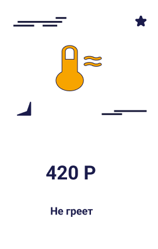

Как мы работаем
Консультация
Вы получите полную консультацию о вашей стиральной машине, узнаете стоимость ремонта.
Выезд мастера
Мастер выедет к вам на дом в договоренное время, сделает осмотр и ремонт. Все инструменты и необходимые детали у мастера с собой
Результат
Вы принимавете работу, оплачиваете по карте или наличными, получаете гарантию и исправную стиральную машиную
Неисправность стиральной машины
Выезд мастера - БЕСПЛАТНО
Диагностика в случает отказа от ремонта - 500 руб
Ремонт без учета запчастейот 300-2500 Р
В результате попадания мусора в систему слива воды стиральной машины, вода может перестать сливаться.

Нагрев воды зависит от исправности нагревательно элемента или электроники.

Чаще всего стиральная машина не включается из-за неполадки в электронной плате.

В большинстве случаев такое происходит из-за вышешедшего из строя нагревательного элемента (тэн).

Чаще всего в стиральной машине не крутится бак из-за неполадок в двигателе.
Стиралка не ровно стоит, старые амортизаторы могут быть причиной сильной вибрации.
Такое происходит из-за несправности подшипников, посторонний предмет в баке.

Может произойти из-за сломанной ручки дверцы, или стиралка не закончила цикл.